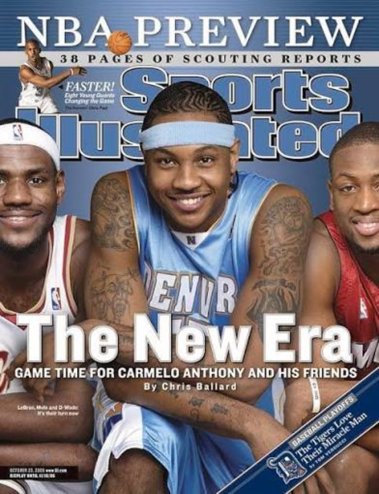
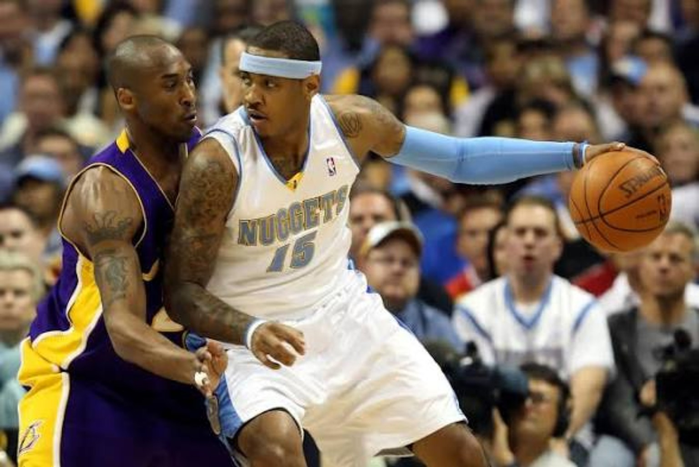
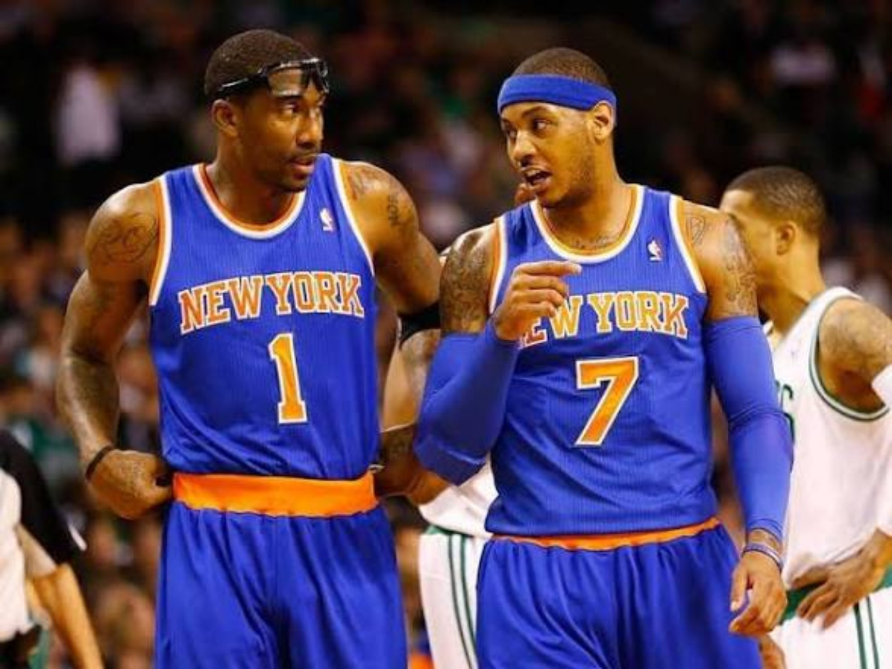
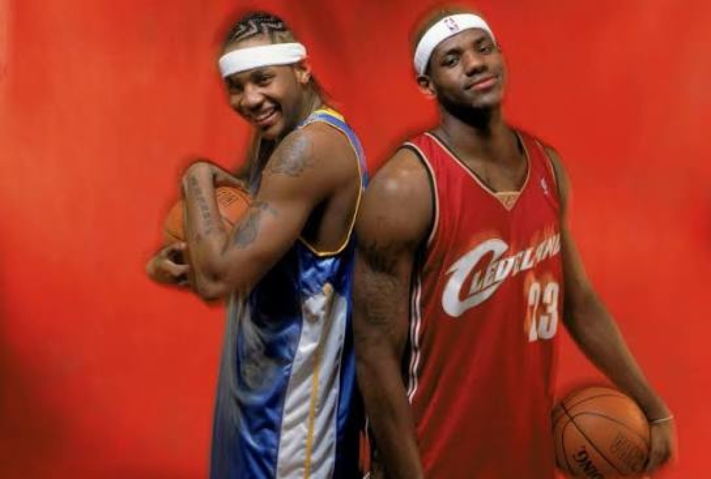
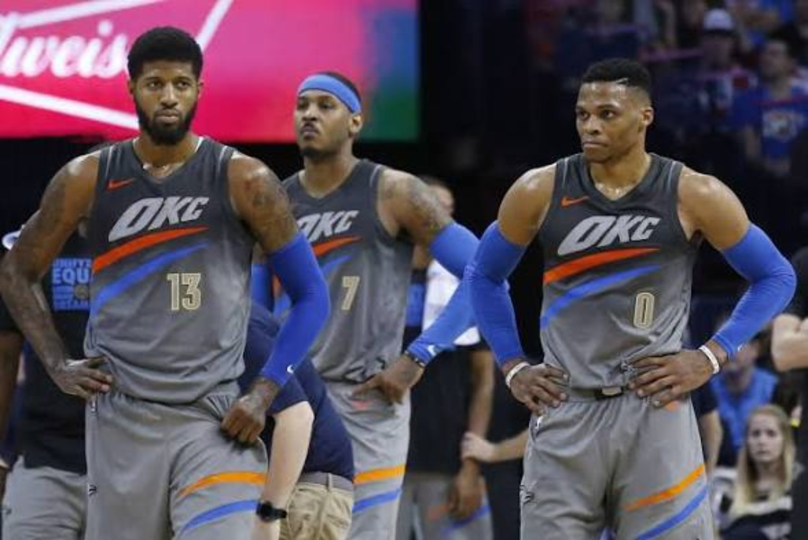

THE ME7O
FILES.
CARMELO'S WAY.
Syracuse. The 2003 Draft. Denver. New York. Team USA. The fall. The comeback. The Hall of Fame. Eleven chapters built to document Carmelo Anthony's whole basketball story before reducing it to a ring argument.
START WITH FILE 001 →
MORE THAN
THE BUCKETS.
Melo's career is easy to flatten into a debate: elite scorer or empty scorer, superstar or almost-superstar, winner or disappointment. The ME7O Files is built to resist that shortcut.
Now the full archive is open — from the freshman championship to the Hall of Fame jacket, with the fit, context, teammates, role changes and era all included.

ELEVEN FILES.
ONE CAREER.
The archive starts with an 18-year-old champion and ends with a first-ballot Hall of Famer. Every chapter in between is live now.
THE FULL ME7O ROADMAP IS OPEN.OPEN THE ROADMAP →
THE STORYLINES.
The photos now follow the career arc too — including the new OKC, Houston, Portland, Lakers, Hall of Fame and era images.

ONE YEAR. ONE TITLE.
The freshman championship season that started everything.
READ →
THE CLEAR NO. 2.
LeBron first. Melo second. Detroit's decision and Denver's immediate validation.
READ →
THE YOUNG STAR YEARS.
From instant scorer to a more complete leader with Chauncey Billups.
READ →
THE CLOSEST HE GOT.
The WCF run, the Kobe duel and proof Melo could lead a contender.
READ →
THE NEW YORK YEARS.
The homecoming, Amar'e, Linsanity, 2013 and the fast falloff.
READ →
KING OF NEW YORK.
The scoring title, leadership and the best all-around season of his career.
READ →
MELO VS. THE ERA.
Kobe, LeBron, KD, Dirk, Pierce, T-Mac, Vince — and where Melo fits.
READ →
OLYMPIC MELO.
Four Olympics, three golds and proof he could adapt around other stars.
READ →
OKC. HOUSTON. OUT.
Role shock, bad fits and a league that decided too quickly he was finished.
READ →PORTLAND + L.A.
The late-career adjustment that gave the story a better ending.
READ →THE FINAL FILE.
Scoring, Syracuse, Team USA, the ring argument and where 4DK places Melo all time.
READ →CARMELO'S WAY.
All 11 files are now open.
BUCKETS.
STYLE.
PRESSURE.
LEGACY.
The complete archive is live — from Syracuse to Denver, New York, Team USA, Portland, Los Angeles and the Hall of Fame.
READ THE FINAL FILE →